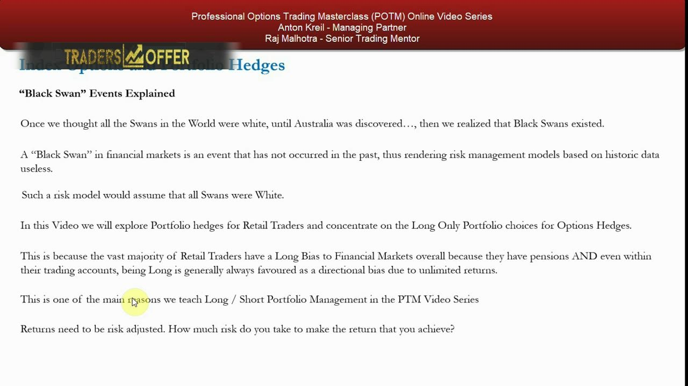
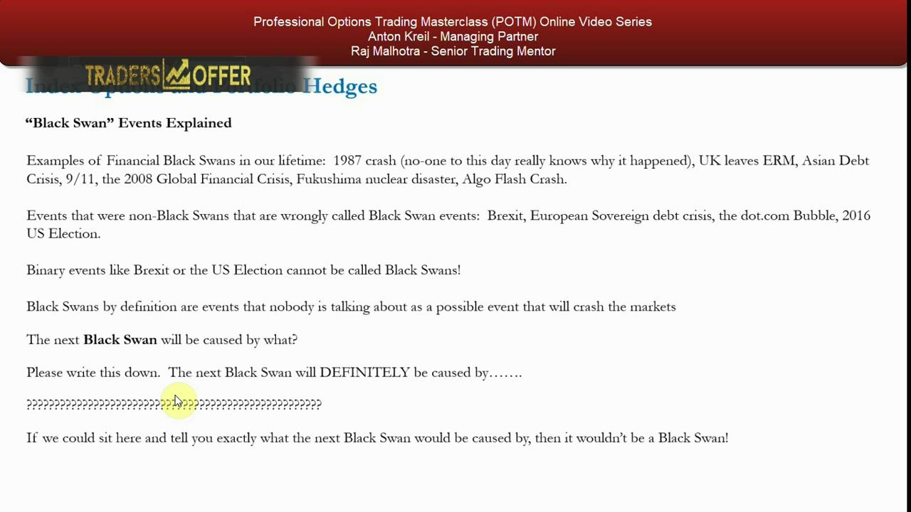
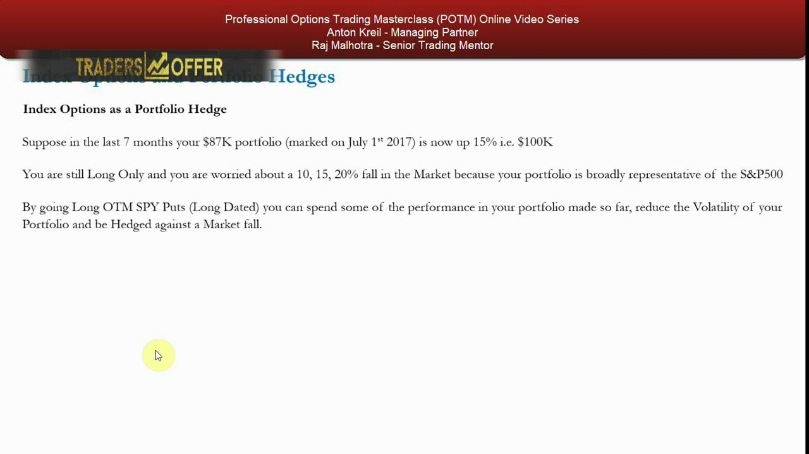
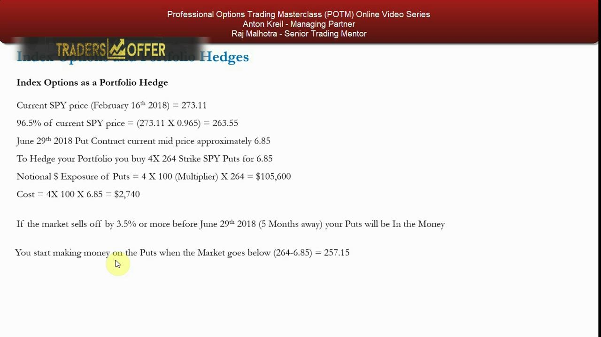
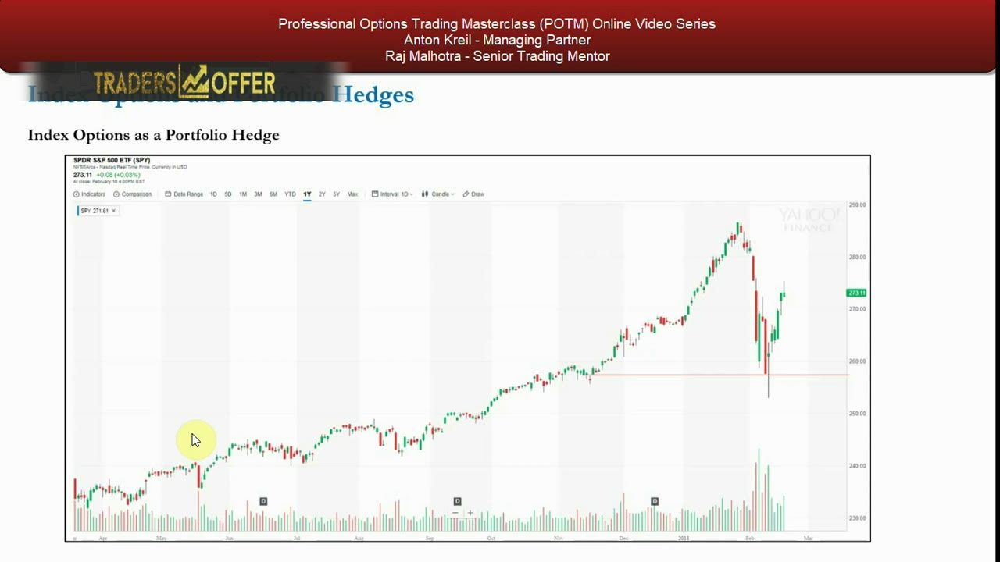
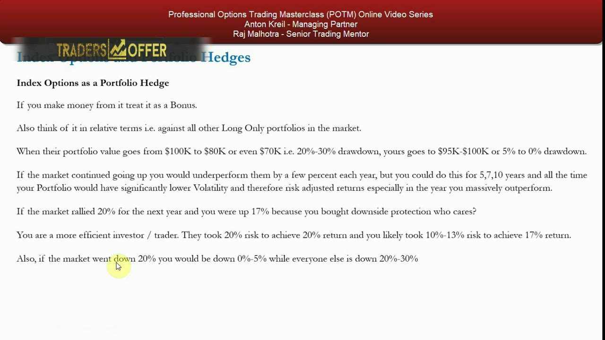
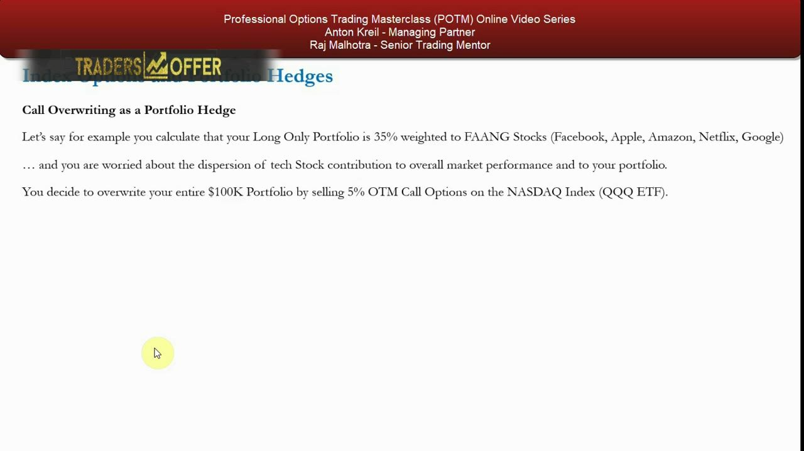
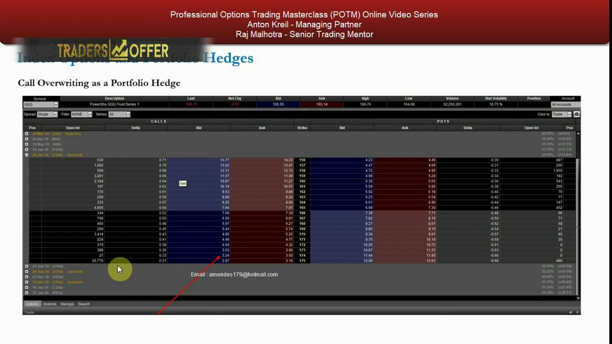
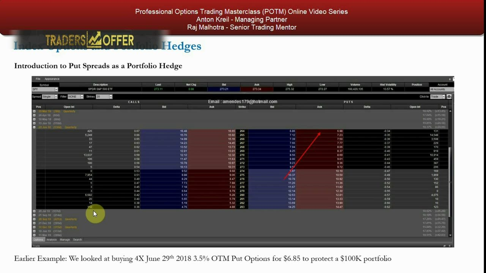
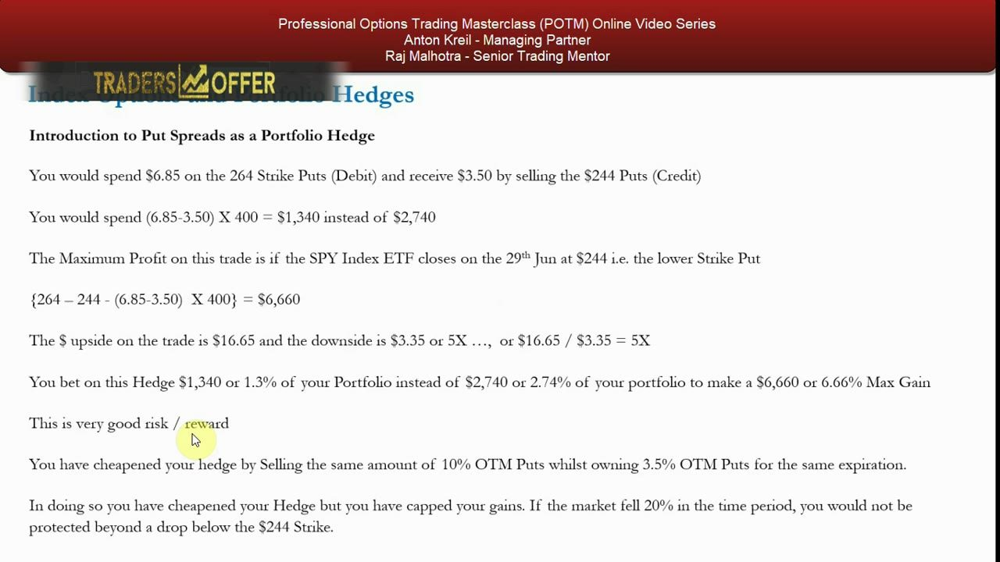

Index Options & Portfolio Hedging
Using index options to hedge a long-only book against black swans in one cheap trade.
A long-only mega/large-cap book carries the market's full volatility, so when a black swan hits — an event history never priced — you take the market drawdown or worse. Index options let you hedge the market leg of that risk cheaply, in a single trade, so your returns are risk-adjusted rather than just directional.
The gist
- A black swan is an event with NO historical precedent, so it invalidates every risk model built on historical data — the model assumes all swans are white (1987 crash, UK leaving the ERM, Asian debt crisis, 9/11, 2008 GFC, Fukushima, the algo flash crash); calendared binary events (Brexit, 2016 US election, dot-com, European sovereign debt) are NOT black swans.
- Returns are risk-adjusted: 15% return at 12% annualized risk beats 25% at 50% risk — risk = the annualized standard deviation (volatility) of the portfolio measured on a 3-6 month rolling basis. A long-only mega/large-cap book runs at close to market (S&P 500) volatility.
- You carry three risks — market/index, sector, and stock. Index options hedge the market leg cheaply, in a single trade. Rule of thumb: market +20% -> book +15-25%; market -20% -> book -20-30%.
- SPY = the S&P 500 index / 10 (index 2731.1 -> SPY 273.11). The protective put: SPY 273.11, 96.5% = 263.55, buy 4 x 264-strike June 29 2018 puts at $6.85. Notional 4 x 100 x 264 = $105,600; cost 4 x 100 x $6.85 = $2,740; breakeven 264 - 6.85 = 257.15 (5.84% below spot).
- Beta-weighted hedge ratio: contracts approx = portfolio value x beta / (index level x 100), e.g. $100K / ($264 x 100) approx 4 contracts. A -20% crash takes SPY to 218.48, the puts go ~14% in the money and make $15,468, offsetting a 15.5% book loss almost fully.
- Treat the hedge like fire insurance: you buy it hoping never to use it and you NEVER trade out of it. Judge it in relative terms — when peers draw down 20-30%, you draw down ~0-5%; give up a few percent in up years for far smoother, better risk-adjusted returns.
- Call overwriting as a portfolio hedge (QQQ example): FAANG drifted from <20% to 35% of the book, so sell 5% OTM QQQ calls — QQQ 165.13, 165.13 x 1.05 = 173.38 so sell the 174 strike, sell 6 x 174 at $3.37 = $2,022 premium covering $104,400 notional. Upside is capped at the premium and downside protection is minimal (only ~2% on a $100K book).
- Regime rule: long puts are the core hedge in bull markets (premiums cheap), short calls are the core in bear markets (vol higher so premiums richer, and bear-market short squeezes are bigger in magnitude than the sell-offs).
- Put spread = cheaper insurance: buy 264 at $6.85 / sell 244 at $3.50 = net $1,340 vs $2,740. Max profit {(264-244)-(6.85-3.50)} x 400 = $6,660; $16.65 upside vs $3.35 downside = ~5x risk/reward, but protection is capped below 244. Scaling to 6 contracts each way costs $2,010 to make $9,990 (near-full hedge of a 10% move).
- Marginal-benefit principle: compare an options strategy against OTHER options strategies (put spread vs outright put), not just against being long/short the underlying. These index hedges reuse single-stock strategies, so they are NOT added to the useful PDF, and they work best when the index-to-portfolio correlation is strong.
The final hedging video: index options
- The last of the hedging videos, applying already-taught strategies to index options and portfolio hedges for the retail-trader mandate.
- These index/portfolio applications are NOT added to the useful PDF because the underlying strategies (long puts, covered calls, spreads) were already covered on single stocks.
- Agenda: black swans and why you hedge, index options as a hedge, call overwriting on a portfolio, and an introduction to put spreads.
The chapter reframes strategies you already know — buying puts, writing calls, spreads — and points them at the market-level risk of a whole portfolio rather than at a single name.

What a black swan actually is
- The name comes from Britain discovering black swans in Australia — the opposite of what everyone had assumed existed.
- In markets it is an event that has NOT occurred in the past, so it renders risk-management models built on historical data useless.
- The model implicitly assumes all swans are white; the black swan proves that assumption wrong and the market moves far more than any historical model expected.
The whole case for hedging rests here: you cannot model an event that has no historical precedent, so you insure against the unknown rather than trying to forecast it.

Real black swans vs calendared non-swans
- Genuine black swans: the 1987 crash (still unexplained), the UK leaving the ERM, the Asian debt crisis, 9/11, the 2008 GFC, Fukushima, the algo flash crash — 99% of the market never saw them coming.
- NOT black swans (calendared binary events everyone could see): Brexit, the 2016 US election, the dot-com melt-up, the European sovereign debt crisis.
- The test: 'The next black swan will definitely be caused by ___' — if you can fill in the blank, by definition it is not a black swan.
A binary, diarised event with two known outcomes is a known risk, not a black swan; hedges exist for the scenarios you genuinely cannot see or expect.
Returns are risk-adjusted
- Would you rather have 25% return at 50% annualized risk, or 15% return at 12% risk? Clearly the latter — more return per unit of risk taken.
- Risk = the annualized standard deviation (volatility) of the portfolio, measured on a 3-6 month rolling basis by back-testing the actual holdings.
- Most retail net worth is long-biased (pensions + long-biased trading accounts), which is why the Institute teaches long/short: the short side reduces the volatility of returns.
Professionals judge a book by return relative to the risk taken; a long/short mandate or an options hedge lowers portfolio volatility and lifts risk-adjusted returns.

The three risks: market, sector, stock
- A long-only mega/large-cap book runs at close to the market's own volatility — it moves with the S&P 500.
- Three types of risk sit inside it: market/index risk, sector risk, and single-stock risk.
- Index options hedge the market leg cheaply and in one trade, without having to unwind or hedge every individual name.
Because the market leg dominates a broad long-only book, a single index-option position neutralises the biggest slug of risk far more efficiently than name-by-name hedging.
The setup: a $100K long-only book at risk
- Example: an $87K pension marked on 1 July 2017 is up 15% to $100K by February 2018, still long only and broadly representative of the S&P 500.
- Rule of thumb: market +20% in a year -> book +15-25%; market -20% -> book -20-30%.
- Question to ask: what percentage of the book would you pay each year to eliminate the downside? Spend some of the gains on long-dated OTM SPY puts.
With the market up 15% in seven months, the trader is exposed to a 10-20% fall; buying long-dated out-of-the-money SPY puts converts part of the gain into downside protection.
SPY = the S&P 500 index divided by 10
- SPY last 273.11, bid 273.21, offered 273.34 (screenshot 16 February 2018) — it tracks the S&P 500 level divided by 10.
- 96.5% of the SPY price = 273.11 x 0.965 = 263.55, so the trade targets a strike just outside that, ~3.5% out of the money.
- Looking at the 29 June 2018 expiry — 130 days out — with calls on the left of the chain and puts on the right.
The SPY ETF is the practical instrument for hedging the index: it trades in line with the S&P 500 at one-tenth the level, and the OTM put strike is chosen a few percent below spot.

The protective SPY put hedge
- Buy 4 x the 264-strike SPY puts, June 29 2018, at $6.85 (bid 6.86 / offer 6.98).
- Notional exposure = 4 x 100 x 264 = $105,600; cost = 4 x 100 x $6.85 = $2,740.
- Beta-weighted hedge ratio: contracts approx = portfolio value x beta / (index x 100), i.e. $100K / ($264 x 100) approx 4 contracts.
Four contracts hedge roughly the whole $100K notional, and the $2,740 premium is the price of that insurance for five months to expiry.
Breakeven and a crash scenario
- Breakeven = strike minus premium = 264 - 6.85 = 257.15, which is 5.84% below the current 273.11 level.
- You start making money once the market falls below 264 minus the premium; below breakeven the put gains offset the book's losses.
- A crash (-20%): SPY -> 218.48, the puts go ~14% in the money and make $15,468 — fully negating a 15.5% dollar loss on the rest of the book.
The SPY chart shows how far the market must fall for the hedge to pay; in a real -20% crash the put payoff almost exactly offsets the portfolio drawdown.

Treat the hedge like fire insurance
- You initiate the hedge intending NOT to trade out of it — you have decided to spend the $2,740, like buying home fire insurance you hope never to use.
- Judge it in relative terms: when other long-only books go from $100K to $80K-$70K (20-30% drawdown), yours holds near $95K-$100K (~0-5% drawdown).
- In up years you might underperform by a few percent, but the whole time you carry less risk, so returns are smoother and risk-adjusted returns are better.
The hedge is bought and left on; its value is the drawdown it prevents versus peers, and any payoff is a bonus — you never cancel insurance because the fire hasn't happened yet.

Call overwriting on the FAANG-heavy book
- Scenario: FAANG (Facebook, Apple, Amazon, Netflix, Google) has doubled and drifted from <20% to 35% of the book, worrying you about tech dispersion.
- Instead of a put, sell 5% OTM calls on the NASDAQ ETF QQQ as a covered-call at the index level.
- This is the same covered-call strategy taught on single stocks, just applied to the portfolio's market/sector leg.
When a concentrated sector weighting is the concern, writing index calls rents out the upside for premium income rather than paying out for downside protection.

The QQQ call-overwrite trade
- QQQ last 165.13; 165.13 x 1.05 = 173.38, so sell the 174 strike (5% OTM), June 29 2018.
- Sell 6 x 174 calls at the $3.37 mid (bid 3.24 / offer 3.50): notional 6 x 100 x 174 = $104,400 covering the $100K book; premium 6 x 100 x $3.37 = $2,022 collected.
- You want QQQ to settle at 174 or below by expiry; upside is capped at the premium and downside protection is minimal — a $100K book fall beyond ~2% is unprotected.
Overwriting collects income and softens small pullbacks, but unlike a put it caps your gains and offers little cushion in a real sell-off.

Which hedge in which regime
- The covered-call scenarios from single stocks all carry over: hedging longs with positive or negative P&L, dividend protection into ex-div, and stock-repair for better execution.
- In bear markets volatility is higher across the board, so writing calls collects richer premiums — and bear-market short squeezes tend to be bigger than the sell-offs, driving demand for OTM calls.
- Core rule: long puts are the core hedge in bull markets (cheap premiums), short calls are the core in bear markets (rich premiums).
Match the tool to the regime: buy cheap puts when vol is low in a bull market; write richer calls when vol is elevated in a bear market.
The put spread: cheaper insurance
- Take the same SPY hedge but sell a lower-strike put against it: buy 4 x 264 at $6.85 (debit), sell 4 x 244 at $3.50 (credit).
- Net cost = (6.85 - 3.50) x 400 = $1,340 instead of $2,740 for the outright puts.
- Max profit if SPY closes at the lower 244 strike on 29 June: {(264 - 244) - (6.85 - 3.50)} x 400 = $6,660.
Selling a deeper OTM put finances part of the protective put, halving the cost — at the price of capping the payoff below the lower strike.

Put-spread risk/reward and marginal benefit
- $16.65 upside vs $3.35 downside = 1665 / 335 approx 5x risk/reward; you risk ~1.3% of the book ($1,340) to make up to 6.66% ($6,660), but you are unprotected below 244.
- On a 10% market fall your longs lose ~10% ($10,000) while the spread adds back 6.66%, leaving you ~-3.34% vs peers down 10-15%; scaling to 6 x 6 contracts costs $2,010 to make $9,990 (near-full hedge of a 10% move).
- Marginal benefit: compare an options strategy against OTHER options strategies (put spread vs outright put), not just against the underlying — and remember these index hedges reuse single-stock strategies, so they are NOT in the useful PDF and work best with strong index-to-portfolio correlation.
The put spread trades a capped payoff for a much better cost and risk/reward; the deeper lesson is to always measure a strategy's marginal benefit against your other options strategies, which is the thread the later spread videos pick up.

Glossary
- Black swanAn event with no historical precedent that invalidates risk models built on historical data; if you can name what will cause the next one, it is by definition not a black swan.
- Risk-adjusted returnReturn judged relative to the risk (volatility) taken to earn it; 15% at 12% risk is superior to 25% at 50% risk.
- Annualized standard deviationThe measure of portfolio risk/volatility, computed on a 3-6 month rolling basis from the actual holdings and annualized forward.
- SPYThe S&P 500 index ETF; it trades at the S&P 500 level divided by 10 (index 2731.1 -> SPY 273.11) and is the practical instrument for hedging the index.
- QQQThe NASDAQ-100 ETF, used here to write index-level covered calls against a tech-heavy (FAANG) portfolio.
- Market / sector / stock riskThe three risks in a long-only book; index options hedge the market (index) leg cheaply in a single trade.
- Beta-weighted hedge ratioNumber of contracts approx = portfolio value x beta / (index level x 100); e.g. $100K / ($264 x 100) approx 4 contracts.
- Protective putBuying OTM index puts (4 x 264 SPY at $6.85, cost $2,740) so downside gains on the puts offset losses on the long book.
- BreakevenStrike minus premium (264 - 6.85 = 257.15), the level below which the put position turns net profitable — here 5.84% below spot.
- Call overwritingA covered call applied at the index level (sell 6 x 174 QQQ at $3.37, $2,022 premium); it earns income and caps upside but gives little downside protection.
- Put spreadBuy a higher-strike put and sell a lower-strike put (buy 264 / sell 244) to cheapen the hedge to $1,340 vs $2,740, capping the payoff below the lower strike.
- Marginal benefitMeasuring an options strategy's effectiveness against your OTHER options strategies (put spread vs outright put), not just against being long/short the underlying.